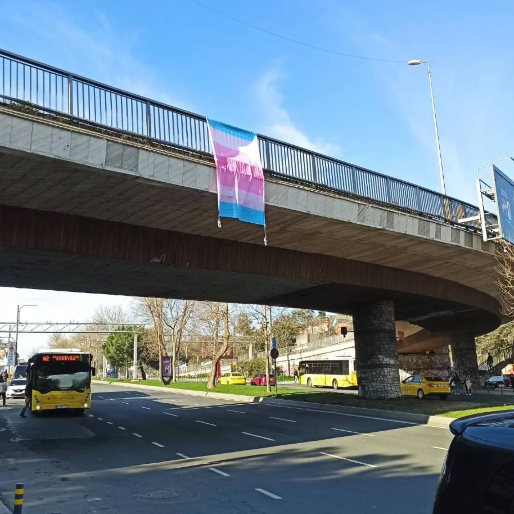
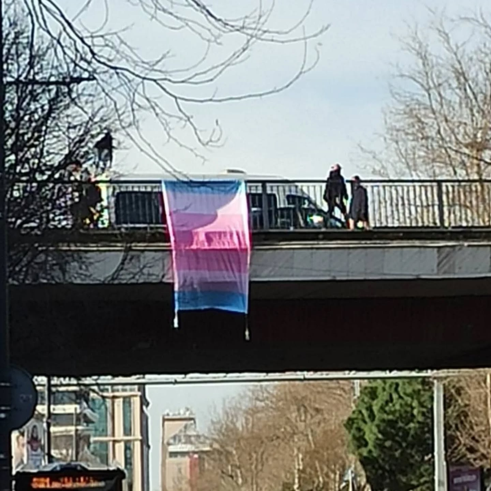

2026-03-31 07:40:00
“Şimdi trans kadın, trans erkek ve nonbinary bayraklarını ezberleme zamanı. Adım adım, renk renk, hepimiz kafanıza kazınacağız!” dedik bir kere
Evet dönmeyiz ama sözümüzden dönmeyiz. Burada bir ortaklaşalım. Ne de güzel ışıl ışıl trans kadın bayrağı
Yıllarca trans kadınları yok saydınız, öldürdünüz, Hande Kader’in katili hala cezasız, Hande Buse Şeker’in katili polis Volkan Hicret için istenen ağırlaştırılmış hapis cezası talebi reddedildi, Zeynep transfobik devlet ve sağlık politikaları sebebiyle intihar etti. Her gün adını dahi öğrenemediğimiz trans kadınlar öldürülüyor, ölüme sürükleniyor.
Ama öldürmekle bitmeyiz, katlettiğiniz trans kadınların öfkesiyle Beşiktaş Yıldız Köprüsü'nden trans kadın bayrağı sallandırdık.
Katledilen trans kadınlar isyanımızdır.

